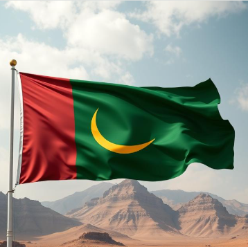

Official Language: Zahabian (a local dialect) and Arabic
National Holiday: Dhahab Week is celebrated every year to remember a special event in 1849. During that week miners found gold throughout the country, bringing wealth and new opportunities. People celebrate with festivals, parades, and stories about the gold discovery.
Tradition:
Core Cultural Value: Prosperity - Working hard to improve life and the country.
Symbol: Gold moon on the national flag, representing the size of moon all the gold was found.
Overview: The country’s human rights policy is mainly shaped by the leader's decrees, with limited reference to the Universal Declaration of Human Rights.
Treatment of Girls and Women: Women/girls have opportunities to work and support their families, with a focus on community involvement. They are also encouraged to embrace traditional beliefs, contributing to the nation’s cultural heritage.
Protections and Inequalities: Leadership positions in politics and the military are primarily held by men maintaining a strong and old tradition.
Red (Left Side): Represents the nation’s strength, courage, and the struggles it has faced and the blood that was fought in war.
Green (Middle and Right): Symbolizes the land’s natural beauty, growth, and hope.
Gold Moon: Represents the country’s natural gold resources, highlighting the importance to the economy and identity.